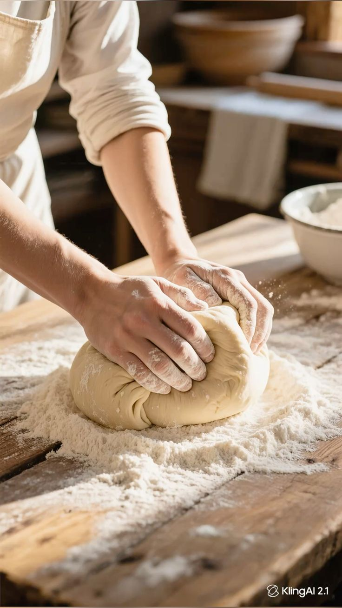
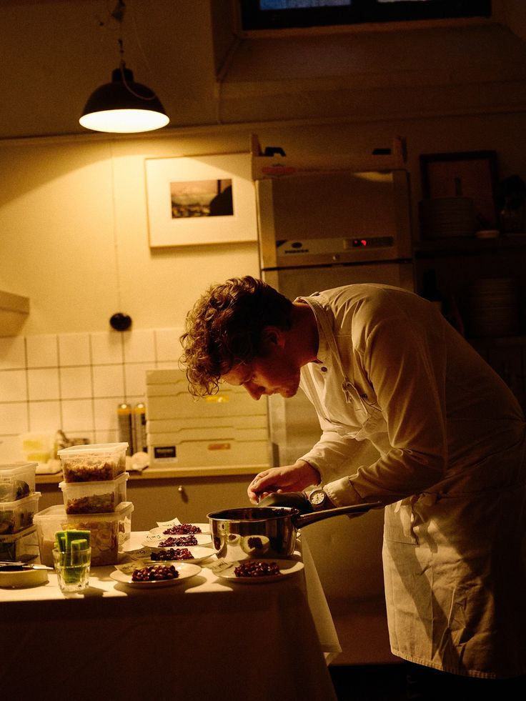

Mamma Mia Ristorante was born out of a deep-seated love for authentic Mediterranean culinary traditions, built on a singular dream: to create a sanctuary where food is not just eaten, but celebrated. We honor the art of traditional cooking methods without taking shortcuts. From the slow-simmered perfection of our rich Spaghetti Bolognese to the comforting embrace of our Creamy Risotto, every recipe is a carefully preserved piece of heritage.
Founded by Komang Gde, a culinary visionary who spent years traveling across Italy, mastering the heart and soul of traditional Neapolitan and Sicilian kitchens. Driven by an obsession with perfection, Chef Komang realized that the secret to the world's best dishes wasn't complexity, but rather a profound respect for high-quality ingredients and the patience to let flavors develop naturally. He brought back generations-old secrets and established Mamma Mia Ristorante to share his lifelong passion for authentic Italian heritage directly with you.
